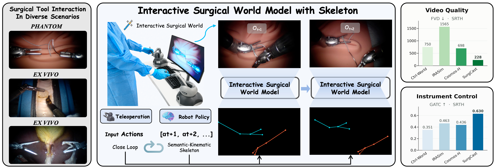
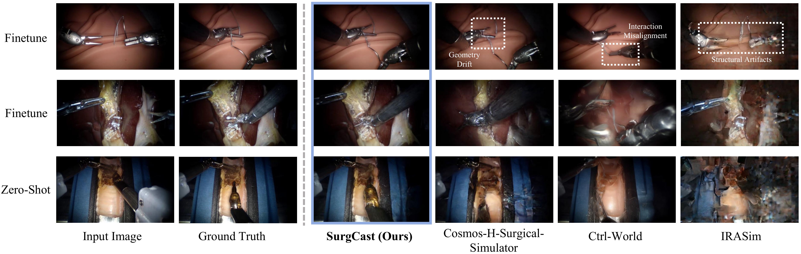
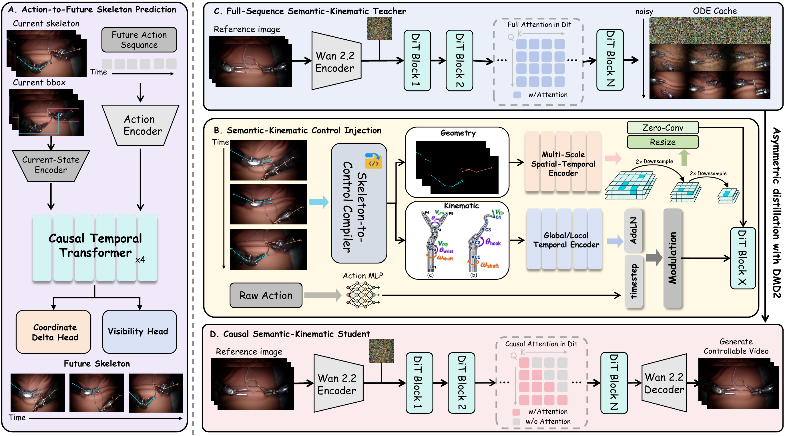

Overview

Interactive Demo
Abstract
Surgical world models must predict how instruments move in response to robot actions while preserving visual fidelity. Direct action conditioning leaves future articulated structure implicit. We introduce SurgCast, which predicts future instrument skeletons, represented by keypoint locations and visibility, from the current skeleton, robot state, and prospective actions, then uses them to control video generation. Dual-Path Semantic–Kinematic Injection applies multi-scale geometric residuals and global–local kinematic modulation alongside the original action pathway. Asymmetric distribution-matching distillation carries this structural interface into a four-step causal student. On SutureBot and SRTH-Porcine-Cholei, the predicted-skeleton teacher and causal student improve all seven reported visual-quality and instrument-control metrics over their respective direct-action baselines; the teacher reduces FVD by 37.6% and 67.3%, respectively. Ablations show that future actions improve skeleton prediction and that combining geometric and kinematic injection outperforms either path under matched oracle-skeleton conditioning. Zero-shot evaluation on Cao cautery combin and physical 6-DoF master-device demonstrations examine transfer and operator-driven generation. These results support action-predicted instrument structure as a shared control interface for full-sequence and causal surgical world models.
Qualitative Results

Overview of the SurgCast Pipeline

BibTeX
@misc{surgcast2026,
title={SurgCast: Action-Conditioned Future Skeletons for Controllable Surgical World Models},
author={Wanhao Liu and Rulin Zhou and Liangjing Shao and Zhaocheng Lin and Dongyue Li and Jingsong Lin and Zhiqing Tang and Jingchen and Panshuo Li and Hongliang Ren},
year={2026}
}